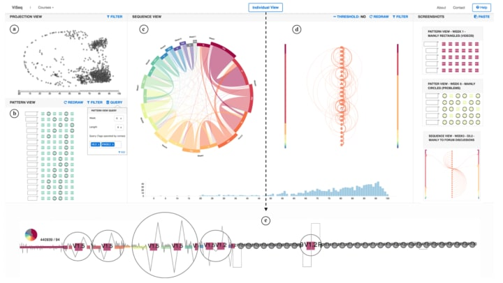
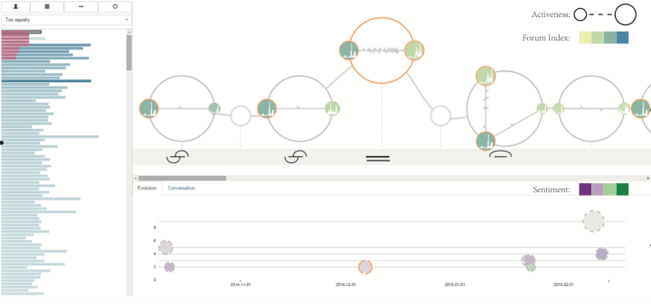
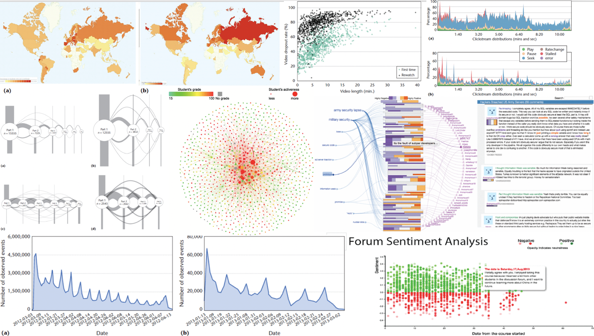
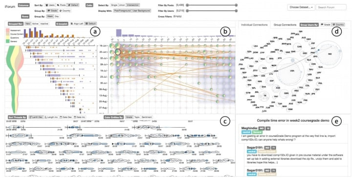
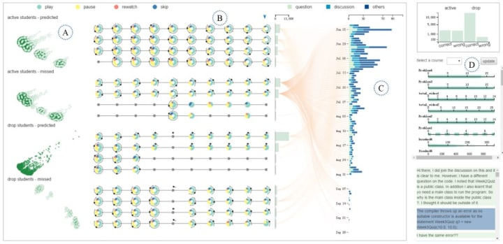
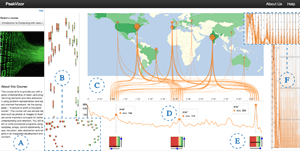
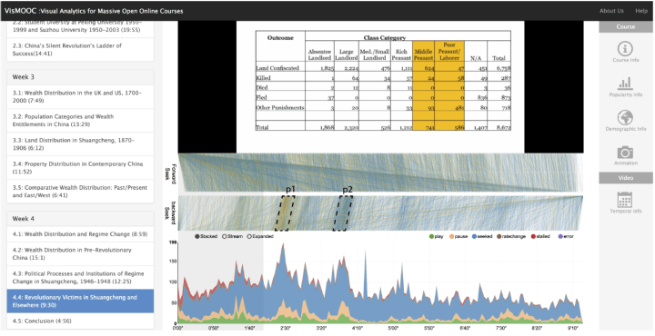

StageMap: Extracting and Summarizing Progression Stages in Temporal Event Sequences
- IEEE Conference on Big Data, 2018.(To appear)
- Author: Yuanzhe Chen, Abishek Puri and Huamin Qu
Transfer Learning using Representation Learning in Massive Online Open Courses
- 9th International Conference on Learning Analytics & Knowledge (LAK19), 2018
- Author: Mucong Ding, Yanbang Wang, Erik Hemberg and Una-May O'Reilly
Using Detailed Access Trajectories for Learning Behavior Analysis
- 9th International Conference on Learning Analytics & Knowledge (LAK19), 2018
- Author: Yanbang Wang, Nancy Law, Erik Hemberg and Una-May O'Reilly
ViSeq: Visual Analytics of Learning Sequence in Massive Open Online Courses

- IEEE Transactions on Visualization & Computer Graphics
- Author: Qing Chen, Xuanwu Yue, Xavier Plantaz, Yuanzhe Chen, Conglei Shi, Ting-Chuen Pong, Huamin Qu
- Links: [pdf]
VisForum: A visual analysis system for exploring user groups in online forums

- ACM Transactions on Interactive Intelligent Systems (ACM TiiS), 2018
- Author: Siwei Fu, Yong Wang, Yi Yang, Qingqing Bi, Fangzhou Guo, Huamin Qu
- Links: [url]
[pdf]
Visual Analytics of Data from MOOCs

- The Association of East Asia Research Univeristies Symposium on Teaching and Learning, 2018
- IEEE Computer Graphics and Applications (CG&A) 2015
- Author: Huamin Qu, Qing Chen
- Links: [pdf]
A Narrative Visualization Approach For Massive Open Online Courses Data Analysis
- HKUST Mphil Thesis, 2018
- Author: Zhen Li (Supervisor: Huamin Qu)
Finding Hidden Problems and Solutions in Flipped Classrooms through Learning Design Patterns
- HKU Msc Thesis, 2018
- Author: Chen Feng (Supervisor: Nancy Law)
The Application of Learning Design Studio in Improving the Learning Design of MOOCs
- HKU Msc Thesis, 2018
- Author: Fan Xu (Supervisor: Nancy Law)
Understanding the Doer Effect for Computational Subjects with MOOCs
- MIT, M.Eng Thesis, 2018
- Author: Jitesh Maiyuran (Supervisor: U.M. O’Reilly and E. Hemberg)
Visual Analytics and Storytelling of Data from Massive Open Online Courses
- HKUST PhD Thesis, 2018
- Author: Qing Chen (Supervisor: Huamin Qu)
Visual Analytics of Online Communication
- HKUST PhD Thesis, 2018
- Author: Siwei Fu (Supervisor: Huamin Qu)
Visual Analytics of Temporal Event Data
- HKUST PhD Thesis, 2018
- Author: Yuanzhe Chen (Supervisor: Huamin Qu)
A Pattern Language Based Learning Design Studio for an Analytics Informed Inter-Professional Design Community
- Interaction Design and Architecture(s) Journal (IxD&A), 2017
- Author: Law, N., Li, L., Herrera, L., Chan, A .Pong, T.C.
- Links: [pdf]
Bridging Learning Analytics to Learning Design through a Pattern Language Based Learning Design Studio
- Design LAK17 Workshop, Learning Analytics and Knowledge Conference, 13-17 March 2017, Vancouver, Canada
- Author: Law, N., Li, L., Herrera, L. F., & Salas-Pilco, S. Z.
Exploring Stopout Prediction and Transfer Learning in MOOCs
- Learning with MOOCs Conference, 2017. Austin, TX
- Author: Alex Huang, Erik Hemberg, Una-May O’Reilly
- Links: [pdf]
Maintaining and Extending MOOC Clickstream Curation in the MOOC-Learner-Project
- Learning with MOOCs Conference, 2017. Austin, TX
- Author: Austin Liew, Erik Hemberg, Una-May O’Reilly
- Links: [pdf]
Visual Analysis of MOOC Forums with iForum

- IEEE Transactions on Visualization & Computer Graphics, 2017
- Author: Siwei Fu, Jian Zhao, Weiwei Cui, Huamin Qu
- Links: [url]
[pdf]
[demo]
Exploring Design Pattern for Innovative Learning Design under Self-Regulated Learning Approach
- HKU MSc thesis, 2017
- Author: Yexuan Zhu (Supervisor: Nancy Law)
Exploring Learning Design Patterns: on a Problem-based Learning Design Approach
- HKU MSc thesis, 2017
- Author: Yiru Lai (Supervisor: Nancy Law)
Identifying Design Patterns for a Pattern Library on the Learning Design Studio
- HKU MSc thesis, 2017
- Author: Wu Jin (Supervisor: Nancy Law)
Identifying Effective Learning Design Patterns for Programming Education
- HKU MSc thesis, 2017
- Author: Yutian Ma (Supervisor: Nancy Law)
Identifying Learning Design Patterns for Online Collaborative Learning
- HKU MSc thesis, 2017
- Author: Yue Chen (Supervisor: Nancy Law)
Investigating Stopout Prediction and Transfer Learning in MOOC’s
- MIT 6.UAP Report, 2017
- Author: Alex Huang
Learning Design Pattern Language and Learning Design Studio Facilitating Teacher’s Learning Design
- HKU MSc thesis, 2017
- Author: Zeng Zhe (Supervisor: Nancy Law)
Overcoming Code Rot in Legacy Software Projects
- M.Eng., MIT EECS, June 2017
- Author: Austin Jun-Yian Liew (Supervisor: U.M. O’Reilly and E. Hemberg)
- Links: [pdf]
DropoutSeer: Visualizing Learning Patterns in Massive Open Online Courses for Dropout Reasoning and Prediction

- IEEE Conference on Visual Analytics Science and Technology (VAST), 2016
- Author: Yuanzhe Chen, Qing Chen, Mingqian Zhao, Sebastien Boyer, Kalyan Veeramachaneni, Huamin Qu
- Links: [url]
[pdf]
NetworkSeer: Visual Analysis for Social Network in MOOCs
- In Pacific Visualization Symposium (PacificVis), 2016 IEEE, pp. 194-198. IEEE, 2016
- Author: Wu, Tongshuang, Yuan Yao, Yuqing Duan, Xinzhi Fan, and Huamin Qu
- Links: [url]
[pdf]
PeakVizor: Visual Analytics of Peaks in Video Clickstreams from Massive Open Online Courses

- IEEE Transactions on Visualization & Computer Graphics, 2016
- Author: Qing Chen, Yuanzhe Chen, Dongyu Liu, Conglei Shi, Yingcai Wu, Huamin Qu
- Links: [url]
[pdf]
A Narrative Visualization System for Peaks in Video Clickstreams from Massive Open Online Courses
- HKUST TLE Mphil Thesis, 2016
- Author: Chengjin Li (Supervisor: Huamin Qu)
VisMOOC: Visualizing Video Clickstream Data from Massive Open Online Courses

- IEEE Pacific Visualization Symposium (PacificVis), 2015
- Author: Conglei Shi, Siwei Fu, Qing Chen, Huamin Qu
- Links: [url]
[pdf]